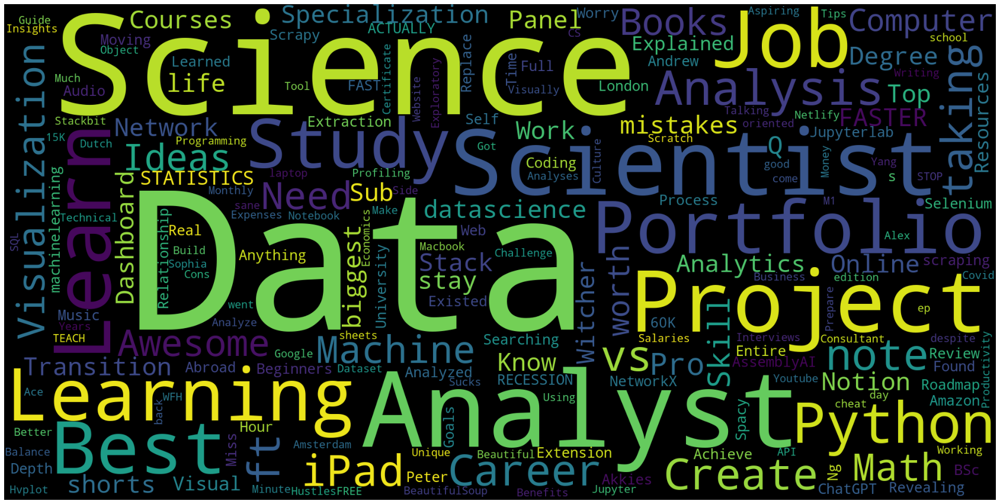
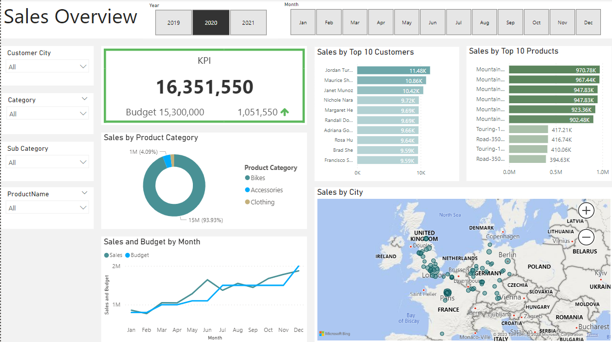
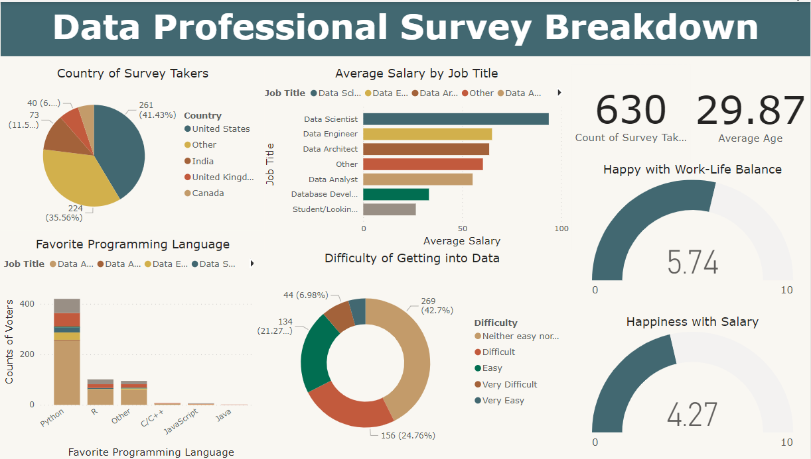
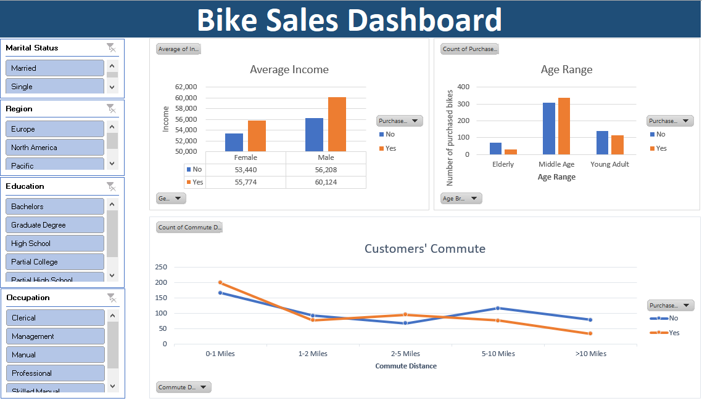

In this project, I acquired Youtube data using API keys to perform exploratory analysis on my favorite channel.
First, I compared data of 5 Youtube channels and explore the relationship between number of videos and views.
Then, I performed an in-depth analysis using bar chart, violinplot, scatterplot, and Word Cloud.


In this project, I was tasked to create multiple dashboards to report on sold quantity, sale trend, and potential clients. I first divided the business demand into 4 roles with specific requests and acceptance criteria. Data Analytics skills include data cleaning using SQL, data manipulation and visualization using PowerBI.

In this project, I used Python to analyze the product sales in a period of 12 months. In particular, what the the months/cities/products with the highest sales. Furthermore, I identified peak sale hours for product advertisement time. Products that were often bought together were also identified as reference for future sale promotions.

In this project, I analyzed from a survey different aspects of data professional: salary, favorite programming languages, entry difficulty, and their attitudes towards salary and work-life balance. The information was categorized based on roles of survey takers (data scientist, data analyst, etc.)

In this project, I analyzed customers' demographics (genders, income, commute distance, etc.) in relation to their decisions to buy products. Advanced functions, PivotTable, and slicers were used for data cleaning and visualization.